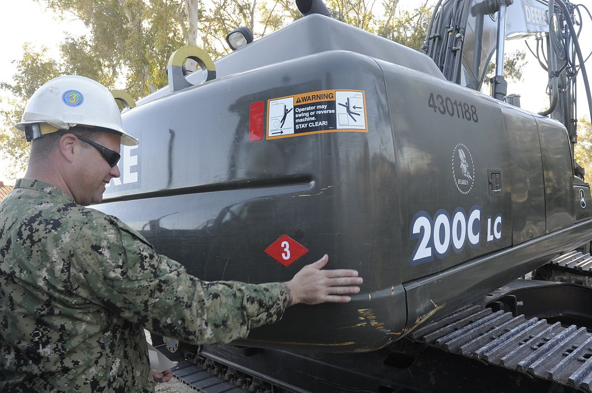
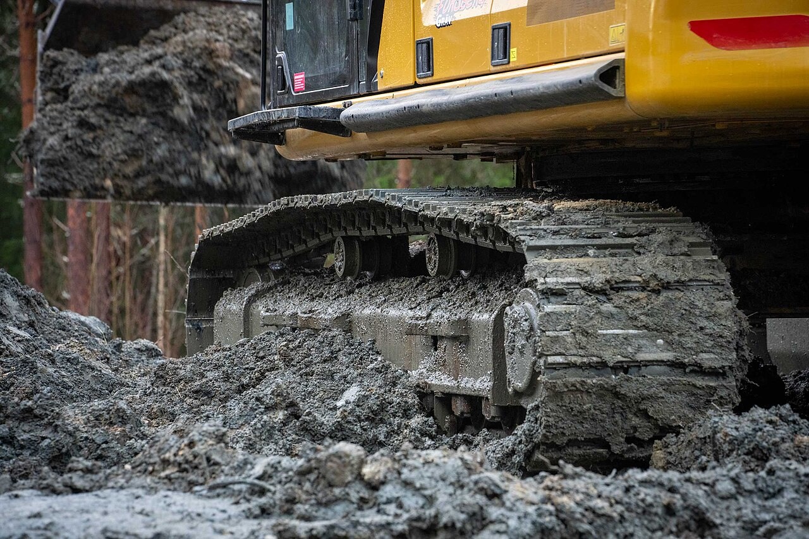
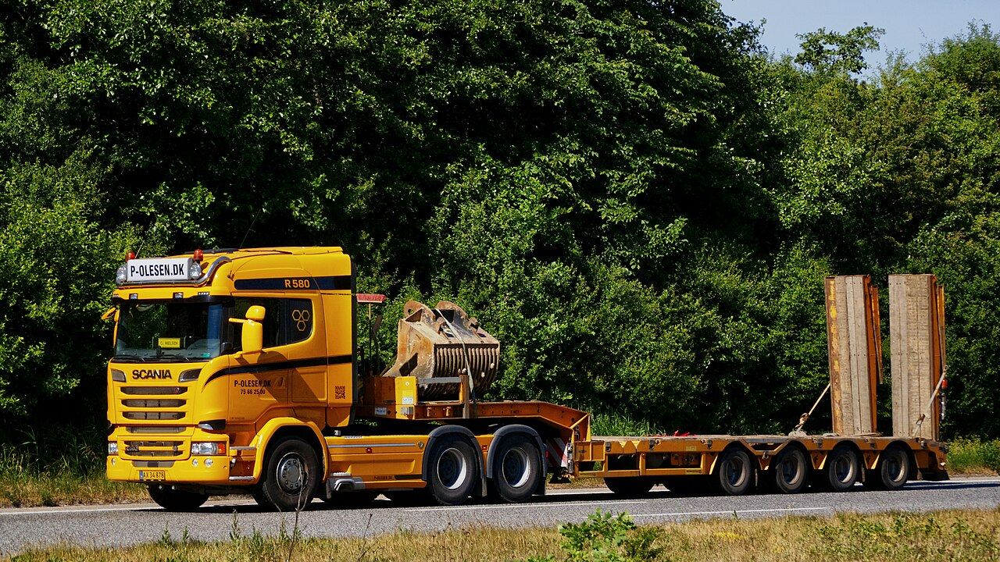
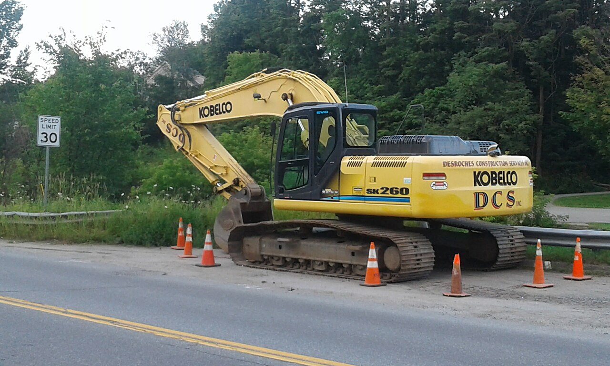

Service &
Ersatzteile.
Eine Maschine ist nur so gut wie der Betrieb dahinter. Wir begleiten Sie vom ersten Beratungsgespräch über die Finanzierung bis zur letzten Ersatzteil-Lieferung — mit Werkstatt in Wien, mobilem Vor-Ort-Service in ganz Ostösterreich und einem Lager, das die wichtigen Teile sofort bereithält.
Alles aus
einer Hand.
Verkauf, Service und Ersatzteile greifen bei uns ineinander. Wer hier kauft, steht später nicht allein da — sondern hat ein Team, das die Maschine kennt.
 01 / VERKAUF
Beratung · Finanzierung · Leasing
01 / VERKAUF
Beratung · Finanzierung · Leasing
Verkauf
Wir hören zuerst zu: Einsatzprofil, Baustellen, Wirtschaftlichkeit. Erst dann empfehlen wir die passende Kobelco- oder NPK-Konfiguration. Auf Wunsch mit massgeschneiderten Finanzierungs- und Leasingmodellen über unsere Partner.

Werkstatt Wien · mobiler EinsatzService
Geplante Wartung in unserer Werkstatt oder mobiler Service direkt auf der Baustelle — unsere Techniker kommen mit voll ausgestattetem Servicefahrzeug. Wartungsverträge mit fixen Reaktionszeiten halten Ihre Flotte planbar im Lauf.

Original Kobelco · NPK ab LagerErsatzteile
Originalteile von Kobelco und NPK — keine Kompromisse bei Verschleiss und Hydraulik. Die gängigsten Filter, Bolzen, Buchsen und Meissel halten wir am Lager Wien vorrätig, Sonderteile beschaffen wir kurzfristig über das Werk.
 WERKSTATT / 1230 WIEN
WERKSTATT / 1230 WIEN
Diagnose, Wartung,
Reparatur.
Unsere Werkstatt in Wien ist auf Kobelco-Hydraulik und NPK-Anbaugeräte spezialisiert. Vom Ölwechsel über die Hydraulik-Diagnose bis zur Komplettüberholung arbeiten wir nach Herstellervorgaben — dokumentiert und nachvollziehbar.
- Hydraulik-Diagnose mit Werksprüfprotokollen
- Wartungsverträge mit fixen Intervallen
- Überholung von Anbaugeräten und Meisseln
- Ölanalyse und vorbeugende Instandhaltung

MOBIL / OSTÖSTERREICHStillstand kostet.
Wir kommen zu Ihnen.
Wenn die Maschine auf der Baustelle steht, zählt jede Stunde. Unsere mobilen Techniker rücken mit komplett ausgestattetem Servicefahrzeug aus und beheben die meisten Störungen direkt vor Ort — in Wien und ganz Ostösterreich.
Für Vertragskunden garantieren wir Reaktionszeiten und priorisierte Einsätze, damit Ihr Projekt im Zeitplan bleibt.
Vom Anruf bis
zum Weiterlauf.
Ein klarer Prozess ohne Umwege — damit Sie immer wissen, woran Sie sind und wann Ihre Maschine wieder arbeitet.
 Telefon · Mail · Formular
Telefon · Mail · Formular
Anliegen melden
Sie schildern uns Maschine, Symptom und Standort. Wir nehmen Maschinendaten auf und schätzen Aufwand sowie Teileverfügbarkeit noch im Gespräch ein.
 Werks-Prüfprotokoll
Werks-Prüfprotokoll
Diagnose & Angebot
Vor Ort oder in der Werkstatt prüfen wir die Ursache. Sie erhalten einen klaren Befund mit transparentem Kostenvoranschlag — vor Beginn der Arbeit.
Original ab Lager
Teile & Ausführung
Lagerteile sind sofort verfügbar, Sonderteile beschaffen wir kurzfristig. Die Reparatur führen unsere Techniker nach Herstellervorgabe aus.

Dokumentiert · einsatzbereitÜbergabe & Doku
Wir übergeben die Maschine geprüft und einsatzbereit, samt Wartungsdokumentation — und vereinbaren auf Wunsch das nächste Intervall.
Maschine steht?
Wir auch nicht.
Ob Wartungsvertrag, akuter Einsatz oder dringendes Ersatzteil — melden Sie sich, meist reagieren wir noch am selben Tag.